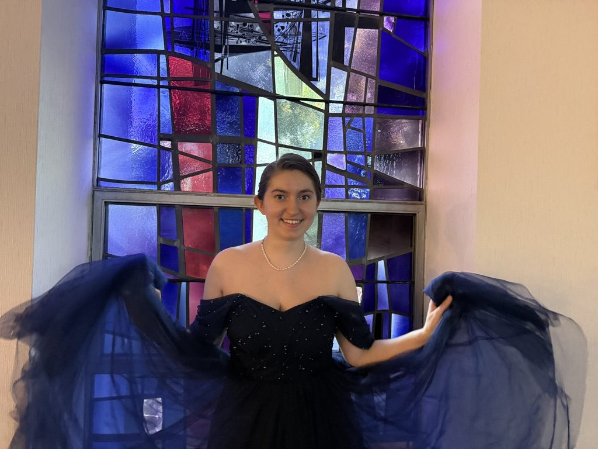
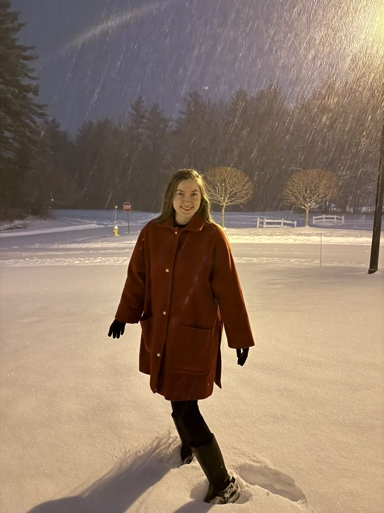
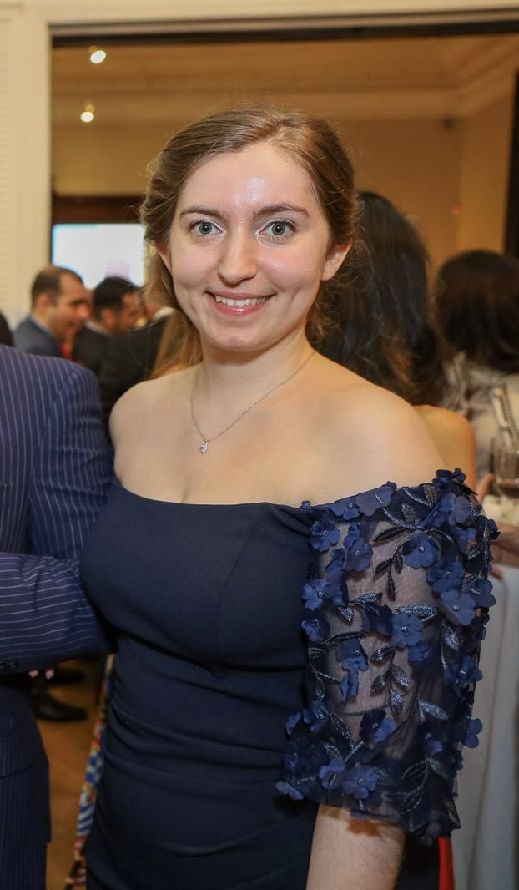
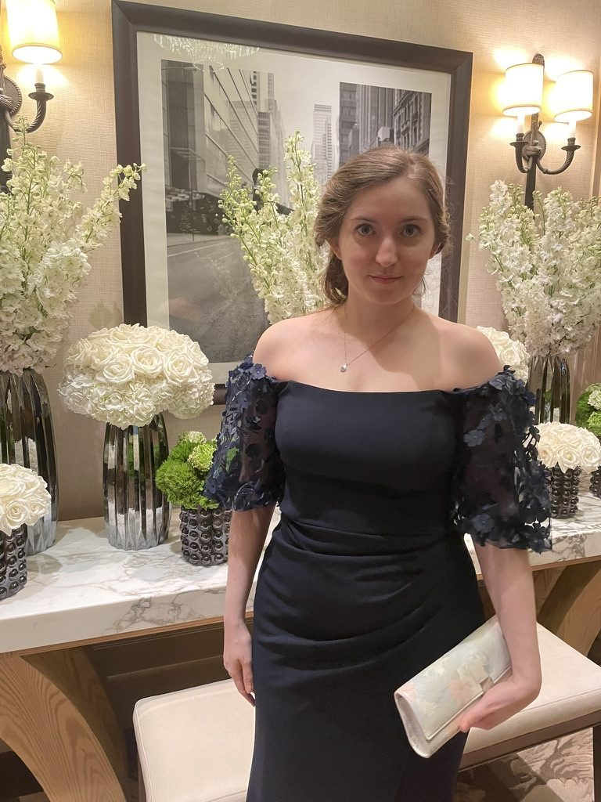

Gallery



Actor
Film, theatre, and devised work. Based in Albany, New York.

LeAnne Weber is an actor working in film and screen, drawn to the medium’s power to connect people through shared emotional experience, as storytelling has done for thousands of years. She is especially at home in warm, determined ingénue roles, both leading and supporting.
Most recently, she wrote, directed, and stars as “Red” in Red Penumbra, currently in festival consideration including Sundance.
Her foundation is in theatre. Trained primarily in Hagen technique, she earned her B.A. in Performing Arts and is a three-time TANYS Award recipient: twice for As The Ivy Grows, a devised original work she co-wrote, costumed, and led as Frances Cleveland, and once for Ensemble Acting in Eurydice. A soprano and trained dancer, she brings range and physical precision to every role.
| Red Penumbra | “Red” (Lead) | Dir. LeAnne Weber |
| Honey Kapoor Origins | Uma (Cameo) | Dir. Amit Agarwal |
| The Importance of Being Earnest | Cecily Cardew (Lead) | Union Springs Academy (filmed) |
| As The Ivy Grows* | Frances Cleveland (Lead) | Wells College · Dir. Ally Collins · TANYS Award-Winning |
| Eurydice | Muse; u/s Eurydice; Live Foley & Vocalist | Wells College · Dir. Siouxsie Easter · TANYS Award-Winning |
| A Midsummer Night’s Dream | Peaseblossom | Wells College · Dir. Siouxsie Easter |
| Plays for Young Audiences (reading) | Assorted Roles | NYU Steinhardt |
*Devised original work; also co-writer and costume designer.
B.A., Performing Arts, Wells College, Aurora, NY
Soprano (with mezzo range) · Dance (Modern, Contemporary, Tap, Jazz) · Choreography · Improvisation · Devised Theatre · Playwriting · Live Foley Art · Horseback Riding · Costuming · Directing · Visual Arts · Self-Tape Ready · Valid Driver’s License · Whistling · Can touch tongue to nose



For casting, representation, and collaboration inquiries:
Albany, NY